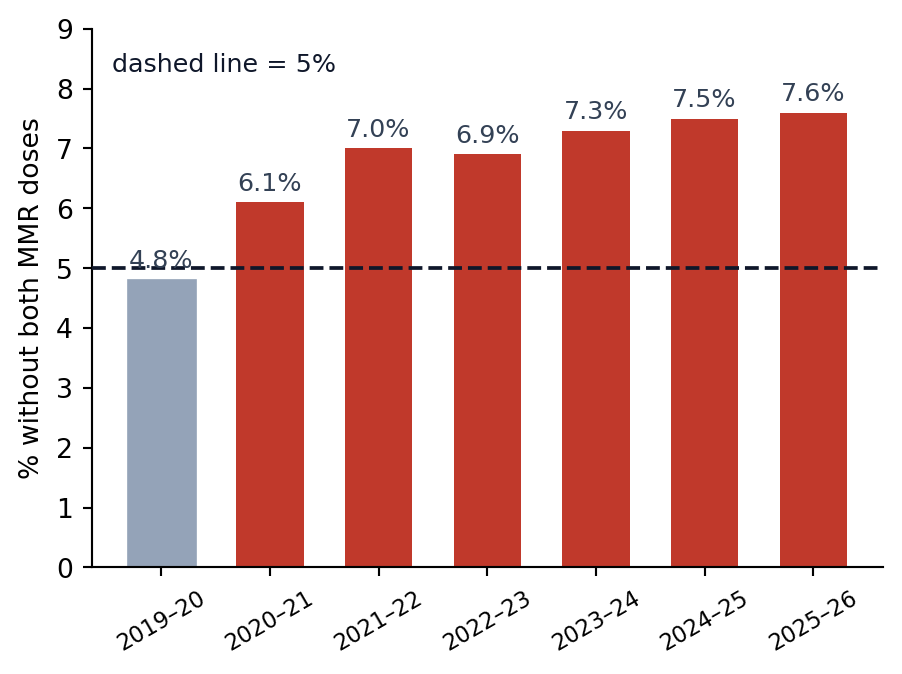
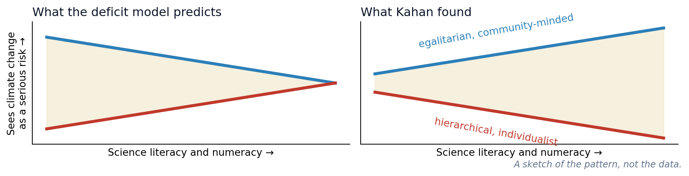
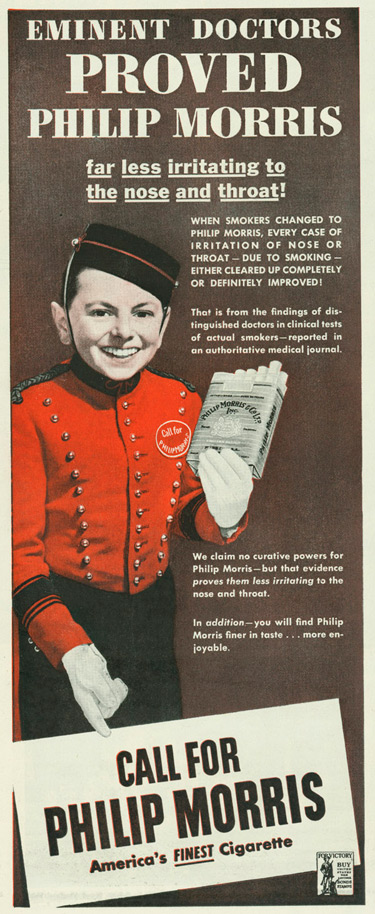
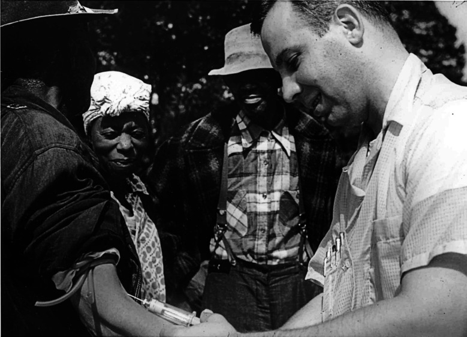
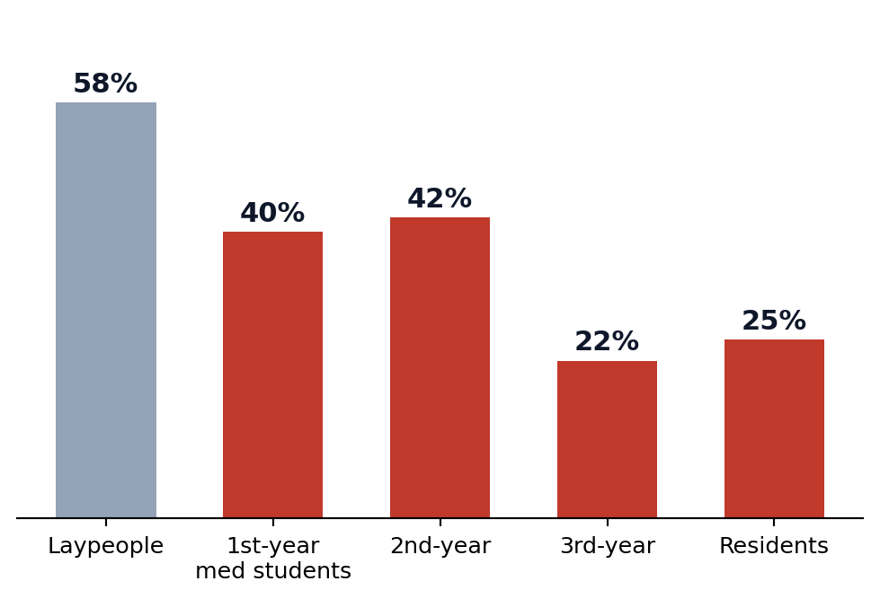
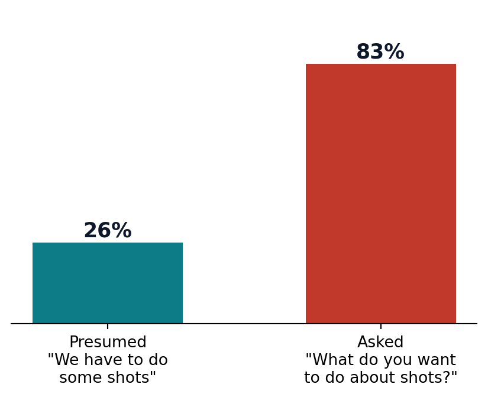
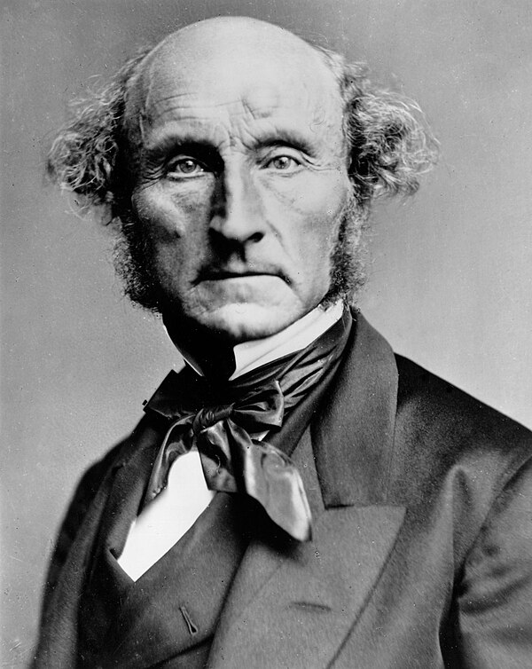

Lecture 9 — Public Health Ethics
Part B: False Beliefs and the Ethics of Correction
Brendan Shea, PhD
An Introduction to Bioethics.
The Patient Who Won’t Believe You
A Case to Sit With
A mother brings her healthy 14-month-old to your clinic. She is warm, college-educated, and devoted to her child. She refuses the MMR vaccine, certain it causes autism. She has read widely, and she is not careless.
You have about 15 minutes.
- What would you actually say to her? Be specific.
- If you hand her the studies showing no link, what do you expect to happen?
- She is choosing for her child. Is her refusal a choice you must respect, or something else?
CDC Public Health Image Library #9346. Photo: James Gathany, 2006. Public domain.
After You’ve Discussed
Note
Her problem is not a shortage of information. She has plenty, much of it false, all of it confidently held. Handing her more facts may do little.
She is not alone. Fewer U.S. kindergartners are protected against measles each year, and vaccine exemptions reached a record 4.2% in 2025–26.
To help her, we first have to understand how a smart, caring person ends up here.
Today
Important
If giving people the facts does not fix false medical beliefs, what may a clinician or a state do instead, without manipulating people or simply declaring them irrational?
By the end of Part B, you will be able to:
- Explain why “just give them the facts” often fails, using Kahan’s identity-protective cognition and Nguyen’s bubble/echo-chamber distinction.
- Tell earned distrust from manufactured doubt, and use two diagnostic questions to choose a response.
- Distinguish persuasion, manipulation, and coercion, and place a response on the correction ladder.
Why Facts Bounce Off
The Deficit Model, Tested
The deficit model says people believe false things because they are missing information: fill the gap, and the belief dissolves. If so, the people who know the most science should agree the most. But on climate change, Kahan found the most science-literate and numerate people were the most divided (Kahan et al. 2012).

Kahan: Reasoning Defends the Group
Dan Kahan calls the pattern identity-protective cognition. On issues that have become badges of group identity, people reason to protect their standing in their group, not to track the truth (Kahan et al. 2012).
- The mind quietly asks “What does someone like me believe?” before “What is true?”
- More skill does not fix it. A skilled reasoner is a better lawyer for the side they already favor.
- Liberals and conservatives, the educated and the not: everyone does it.
Important
What this does not mean
It does not mean people are stupid, and it does not mean there is no truth. The MMR–autism link is false either way.
It changes the strategy, not the facts: on a badge issue, a fact that threatens someone’s group will be fought, not weighed.
Vaccines Became a Badge
For decades, childhood vaccines were not a badge. In 2001, Democrats and Republicans gave Gallup nearly the same answer. By 2024 the gap was 37 points, almost all of it from Republicans (Gallup 2024).
Ivermectin became a badge even faster. Trials found it did not work against COVID, but demand tracked politics, not evidence.

Bubbles and Echo Chambers
You have never run the experiments behind germ theory. Almost everything we know about medicine, we take on trust. So the real question is not “Why won’t they think for themselves?” but “Whom do they trust?” The philosopher C. Thi Nguyen separates two ways trust goes wrong (Nguyen 2020).

Is She in a Bubble or a Chamber?
| If a bubble | If an echo chamber | |
|---|---|---|
| What’s wrong | she hasn’t seen the evidence | she’s been taught the evidence is a lie |
| What works | calm exposure to good information | trust must come first |
| Your first move | inform | connect, then inform |
- Corrections usually fix facts. Across 52 issues and 10,000+ people, none backfired (Wood and Porter 2019).
- Behavior is harder. Debunking the autism myth reduced the belief, but among the most hesitant parents, intent to vaccinate fell from 70% to 45% (Nyhan et al. 2014).
Earned Distrust and Manufactured Doubt
“But Science Gets Things Wrong”
The skeptic has a real point, and we should grant it. Many published findings fail to replicate, and landmark studies have been retracted (Ioannidis 2005).
Important
But from “science sometimes gets it wrong” it does not follow that “so my podcast is just as likely to be right.” A method that catches its own errors is in a different class from one that never checks itself.
The historian Naomi Oreskes says: trust the process, not the genius (Oreskes 2019).
- Scientists are as biased as anyone. Science’s authority rests on organized skepticism: peer review, replication, and attack from rivals.
- The warrant is not “a smart person said so.” It is “this survived a community trying to prove it wrong.”
“Doubt Is Our Product”
“Doubt is our product since it is the best means of competing with the ‘body of fact’ that exists in the mind of the general public. It is also the means of establishing a controversy.”
Brown & Williamson Tobacco, “Smoking and Health Proposal,” internal memo (1969)
You don’t have to disprove science to defeat it. You only have to manufacture doubt.

Philip Morris ad, 1943: the industry borrowed doctors’ authority long before it manufactured doubt. Public domain (no copyright notice).
The memo’s wording follows the transcription in the UCSF Truth Tobacco Industry Documents archive (Bates 690010951–690010959); published versions differ slightly in punctuation. The 1969 date is the archive’s, since the document itself is undated.
The Doubt Playbook
Tobacco, then everything else
- Oreskes and Conway showed that the same few scientists and think tanks reused the tobacco playbook on acid rain and climate change (Oreskes and Conway 2010).
- The goal was never to win the science. It was to make the public think “the experts can’t agree,” so nothing gets done.
And vaccines?
- There is no single paymaster: vaccine makers want people vaccinated.
- But the study that started the MMR scare had one. Andrew Wakefield took more than £435,000 from lawyers preparing to sue vaccine makers (Deer 2011).
Doubt is cheap to make because science is honest about uncertainty. The playbook turns that honesty into a weapon.
When Distrust Is a Reasonable Inference
Some distrust is earned distrust: a sensible conclusion from a real record. The defect is not in the reasoning but in the evidence medicine supplied.
- For forty years, the U.S. Public Health Service watched Black men in Tuskegee go untreated for syphilis, and lied to them about it.
- After the study became public in 1972, older Black men’s trust in medicine and their doctor visits fell. Researchers estimate their life expectancy at 45 fell by up to 1.5 years (Alsan and Wanamaker 2018).

A PHS worker draws blood from a study participant, Macon County, 1953. National Archives. Public domain.
Tuskegee is told in full in Chapter 2 and its paired case study. Here it is applied: the question is what a reasonable person should conclude from it.
Distrust Is Re-Taught in Ordinary Care
False medical beliefs are not only a patient problem.
In a 2016 study, about half of white medical students and residents endorsed at least one false belief about Black patients’ bodies, such as “Black people’s skin is thicker” (Hoffman et al. 2016).
Those who held such beliefs rated a Black patient’s pain as lower and made less accurate treatment recommendations. Each dismissed complaint teaches a patient: this place does not believe me.

Diagnose Before You Correct
Two questions sort most false medical beliefs. Most real beliefs run down more than one branch: find the strongest, and start there.
The branches feed each other, which is why these beliefs are so hard to move. Manufactured doubt seeds an echo chamber with ready-made suspicion; the chamber hardens the belief into identity; and earned distrust makes a person receptive to the chamber in the first place. Hand everyone the same fact sheet, and you help the few in a bubble while hardening everyone else.
What May We Do?
Thought Question
Back to the mother refusing MMR. You now suspect she is in an echo chamber where doctors are cast in advance as untrustworthy.
- Knowing that facts alone may not move her, what is your first move, and why is it not the studies?
- Is it manipulative to lead with rapport and her values instead of evidence? Or is it just good care?
- Where is the line between persuading her and handling her?
Make It Contemporary
In South Africa, President Thabo Mbeki’s government questioned whether HIV causes AIDS and stalled proven antiretroviral drugs. Researchers estimate that from 2000 to 2005 this cost more than 330,000 lives, and that 35,000 babies were born with HIV whom a prevention program could have protected (Chigwedere et al. 2008).
Distrust of Western drug companies, a circle of dissident advisers, and manufactured doubt: the same forces, at the scale of a state.
- Does scale change the ethics of how officials should respond, or only the stakes?
- When a government holds the false belief, who is left to correct it?
Thabo Mbeki, President of South Africa 1999–2008, in 2007. Ricardo Stuckert/PR, Agência Brasil. CC BY 3.0 BR.
After You’ve Discussed
Three words the discussion has been circling:
Persuasion
Moving someone by reasons they can examine. It respects their agency.
Manipulation
Moving someone by going around their reason: fear, framing, or pressure they don’t see.
Coercion
Moving someone by force or threat.
Note
Leading with rapport can be honest persuasion or quiet manipulation. The test is not “did it work?” (propaganda works). It is whether you treat her as a reasoner or as a set of levers: would she endorse what you’re doing if she could see all of it?
Is a Misinformed Refusal Autonomous?
A competent patient’s refusal is usually a conflict of values, not a misunderstanding to clear up. This refusal looks different: it rests on a false fact.
That invites a tempting move: “She’s misinformed, so her choice doesn’t bind me.”
Important
Who decides which beliefs are “false enough”? Usually you, and that is paternalism’s foot in the door. Plenty of competent adults believe false things and keep the right to decide for themselves.
But notice whose body the shot is for. She is deciding for her child, so the standard is the child’s best interest, plus the risk to babies too young to be vaccinated. That case for pushing back is far stronger than “for her own good.” Keep the two apart.
The Correction Ladder
As with coercion, responses to false belief form a ladder, and each rung costs more in autonomy. Climb only as high as the case requires.
| Rung | Tool | Autonomy cost |
|---|---|---|
| 1 | Inform: offer good evidence | none: pure persuasion |
| 2 | Trusted messenger: route it through a voice she already trusts | low |
| 3 | Nudge: defaults, framing, how the choice is presented | contested: may go around reason |
| 4 | Restrict: limit the reach of false claims (platform rules) | real: speech costs |
| 5 | Mandate: attach consequences to the behavior (school-entry rules) | highest |
Rungs 1–2 give reasons. From rung 3 up, we start managing people instead of convincing them.
Rung 3 in Your Exam Room
How you open the conversation matters. In 111 videotaped pediatric visits, parents pushed back far more often when the clinician asked than when they presumed (Opel et al. 2013).
Is presuming a manipulative default, or an honest recommendation, like “You need antibiotics”? Apply the test: does she still get the reasons, and can she still say no?

Mill’s Wager Meets the Echo Chamber
Mill’s wager: let truth and falsehood fight it out in the open, and truth wins. The cure for bad speech is more speech, not less. That is the case for staying on the low rungs.
The echo chamber is the stress test. Mill’s bet assumed people actually hear the other side. If exposure doesn’t correct, the “marketplace of ideas” may not clear, and that is the best argument for climbing higher.

John Stuart Mill (1806–1873). Public domain.
The Suppression Paradox
When the corrector is the state, a trap appears. The state is the least trusted messenger for exactly the people inside the chamber, and the chamber has predicted that “they” will silence the truth.
Note
Coercing behavior
A school-entry vaccine rule changes what people do. It works whether or not anyone is persuaded.
Important
Coercing belief
Removing or penalizing a false claim can confirm the story that authorities hide the truth. The correction becomes evidence of the cover-up.
So coercion against belief can defeat itself in a way coercion against behavior often does not.
Thought Question
A social platform asks you to write its policy on COVID vaccine claims.
- Would you remove false claims, label them, down-rank them, or leave them up? Pick one and defend it.
- Does your answer change if removing them visibly boosts the believers’ sense of persecution?
- Which rung of the ladder is this, and what would have to be true to justify going higher?
Earn the Right to Be Believed
Become Worth Believing
The aim is not to engineer the right beliefs in people’s heads. It is to become, as a clinician and as an institution, worth believing.
- Transparency: show the reasoning and the evidence, including what you don’t know.
- Honesty about uncertainty: overclaiming spends trust you can’t get back.
- Reciprocity: when you ask people to bear a burden, acknowledge it and make it right.
- Repair: name past wrongs plainly instead of asking the betrayed to “just trust the experts.”
Oreskes’ point, turned practical: trust is earned by a process, not demanded by authority.
What Not to Do
“You are not a horse. You are not a cow. Seriously, y’all. Stop it.”
U.S. Food and Drug Administration, on ivermectin, social-media post, August 21, 2021
- The post went viral. Doctors who prescribed ivermectin sued (United States Court of Appeals for the Fifth Circuit 2023). In 2024, the FDA agreed to delete the posts, without admitting wrongdoing.
- Mockery tells the people you most need to reach that you hold them in contempt. It is a correction aimed at the bubble, delivered straight into the chamber.
Back to the Clinic
Return to the mother from the start of class, with her toddler and her 15 minutes.
- Run her belief through the two diagnostic questions. Which branch looks strongest?
- What is your first move now, and which rung of the ladder is it on?
- Compare it with what you said at the start. What changed, and why?
Paired case: Andrew Wakefield and the MMR-Autism Myth: where the mother’s belief came from, and the fight over how to answer it.
Wrap-Up
The deficit model is wrong for charged health topics: on badge issues people reason to protect their group (Kahan), and an echo chamber discredits outside sources in advance (Nguyen). Not all distrust is manufactured. Some is earned, so the first job is to diagnose whether a belief rests on missing information or missing trust. The ethics then turns on the difference between persuasion and manipulation: the honest path is not to engineer belief, but to become worth believing.
Review Questions
Recall
Explain the difference between an epistemic bubble and an echo chamber, and why the same correction can help one and harden the other.
Apply
A man refuses chemotherapy for an herbal remedy he found online, saying doctors “only care about selling drugs.” Use the two diagnostic questions to say where his belief most likely comes from, and what you would do first.
Debate
Should a government be allowed to remove medical misinformation from social media? Defend your view using the suppression paradox and the difference between persuasion and coercion.
Key Terms
- Deficit model — the mistaken view that false belief is simply missing information.
- Identity-protective cognition — reasoning to protect one’s group standing, not to track the truth (Kahan).
- Epistemic bubble — a network that leaves out other voices; exposure can pop it (Nguyen).
- Echo chamber — a network that discredits outside voices in advance; exposure can entrench it (Nguyen).
- Organized skepticism — peer review, replication, and criticism: the source of science’s authority (Oreskes).
- Manufactured doubt — deliberately exploiting uncertainty to block action (Oreskes and Conway).
- Earned distrust — suspicion that reasonably follows from a real history of betrayal.
- Persuasion / manipulation / coercion — moving someone by reasons, by going around reason, or by force.
- Suppression paradox — suppressing a false claim can confirm the story that truth is being hidden.
Further Reading
- Larson, Heidi J. Stuck: How Vaccine Rumors Start — and Why They Don’t Go Away. Oxford University Press, 2020.
- Nguyen, C. Thi. “Echo Chambers and Epistemic Bubbles.” Episteme 17, no. 2 (2020): 141–161.
- Oreskes, Naomi. Why Trust Science? Princeton University Press, 2019.
- Oreskes, Naomi, and Erik M. Conway. Merchants of Doubt. Bloomsbury Press, 2010.
References
Alsan, Marcella, and Marianne Wanamaker. 2018. “Tuskegee and the Health of Black Men.” The Quarterly Journal of Economics 133 (1): 407–55. https://doi.org/10.1093/qje/qjx029.
Brown & Williamson Tobacco Corporation. 1969. Smoking and Health Proposal. Brown & Williamson Records, Bates No. 690010951–690010959. https://www.industrydocuments.ucsf.edu/docs/psdw0147.
Chigwedere, Pride, George R. Seage III, Sofia Gruskin, Tun-Hou Lee, and M. Essex. 2008. “Estimating the Lost Benefits of Antiretroviral Drug Use in South Africa.” JAIDS Journal of Acquired Immune Deficiency Syndromes 49 (4): 410–15. https://doi.org/10.1097/QAI.0b013e31818a6cd5.
Deer, Brian. 2011. “How the Case Against the MMR Vaccine Was Fixed.” BMJ 342: c5347. https://doi.org/10.1136/bmj.c5347.
Gallup. 2024. Far Fewer in U.S. Regard Childhood Vaccinations as Important. Gallup News, August 7, 2024. https://news.gallup.com/poll/648308/far-fewer-regard-childhood-vaccinations-important.aspx.
Hoffman, Kelly M., Sophie Trawalter, Jordan R. Axt, and M. Norman Oliver. 2016. “Racial Bias in Pain Assessment and Treatment Recommendations, and False Beliefs about Biological Differences Between Blacks and Whites.” Proceedings of the National Academy of Sciences 113 (16): 4296–301. https://doi.org/10.1073/pnas.1516047113.
Ioannidis, John P. A. 2005. “Why Most Published Research Findings Are False.” PLoS Medicine 2 (8): e124. https://doi.org/10.1371/journal.pmed.0020124.
Kahan, Dan M., Ellen Peters, Maggie Wittlin, et al. 2012. “The Polarizing Impact of Science Literacy and Numeracy on Perceived Climate Change Risks.” Nature Climate Change 2 (10): 732–35. https://doi.org/10.1038/nclimate1547.
Nguyen, C. Thi. 2020. “Echo Chambers and Epistemic Bubbles.” Episteme 17 (2): 141–61.
Nyhan, Brendan, Jason Reifler, Sean Richey, and Gary L. Freed. 2014. “Effective Messages in Vaccine Promotion: A Randomized Trial.” Pediatrics 133 (4): e835–42. https://doi.org/10.1542/peds.2013-2365.
Opel, Douglas J., John Heritage, James A. Taylor, et al. 2013. “The Architecture of Provider-Parent Vaccine Discussions at Health Supervision Visits.” Pediatrics 132 (6): 1037–46. https://doi.org/10.1542/peds.2013-2037.
Oreskes, Naomi. 2019. Why Trust Science? Princeton University Press.
Oreskes, Naomi, and Erik M. Conway. 2010. Merchants of Doubt: How a Handful of Scientists Obscured the Truth on Issues from Tobacco Smoke to Global Warming. Bloomsbury Press.
United States Court of Appeals for the Fifth Circuit. 2023. Apter v. Department of Health & Human Services, 80 f.4th 579. https://www.ca5.uscourts.gov/opinions/pub/22/22-40802-CV0.pdf.
Wood, Thomas, and Ethan Porter. 2019. “The Elusive Backfire Effect: Mass Attitudes’ Steadfast Factual Adherence.” Political Behavior 41 (1): 135–63. https://doi.org/10.1007/s11109-018-9443-y.
Bioethics OER · CC BY-NC 4.0 · Brendan Shea